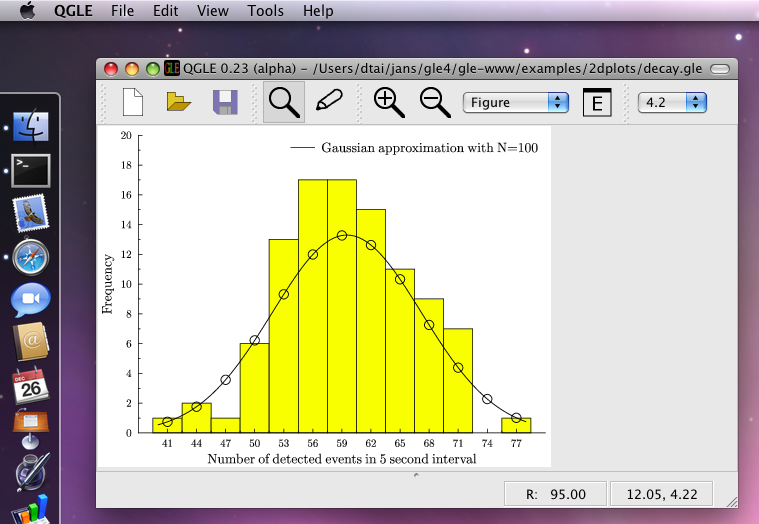

GLE - MacOS Installation Instructions
Installing QGLE/GLE (Binary Installation)
These instructions explain how to install QGLE/GLE using binary .dmg packages (for Intel Macs with MacOS/X ≥ 10.5).
- Download Ghostscript.dmg and install its contents (Ghostscript.framework) in /Library/Frameworks or $HOME/Library/Frameworks.
- Download gle-graphics-4.2.4c-exe-mac.dmg and install its contents (QGLE.app) in /Applications or $HOME/Applications.
- Now try running QGLE from /Applications or from $HOME/Applications.
- To run the command line tool "gle" in Terminal, run "/Applications/QGLE.app/Contents/bin/gle", or add the "bin" directory to your system's search path with "export PATH=$PATH:/Applications/QGLE.app/Contents/bin" and run "gle".
If you have questions about the installation, please feel free to contact the GLE mailing list.
Installing GLE (Source Installation)
The recommended way to install GLE on a Mac is to compile and install the source code. Below are brief instructions to do so. Detailed instructions about compiling GLE in general can be found in The GLE Compilation Guide.
- Make sure you have the Developer Tools installed (these should be available on your OS/X DVD).
- Download and unzip GLE-x.y.z-src.zip to your home directory.
- Execute these commands in a terminal (assuming you unzipped GLE to $HOME/gle4):
cd $HOME/gle4
./configure --with-libgle
make clean
make
sudo make install
|
- Now try running "gle".
If you have questions about the installation, please feel free to contact the GLE mailing list.
Installing QGLE (GLE's Graphical User Interface)
The following explains how to install QGLE, the user interface of GLE. These instructions only work with the latest version of GLE (version 4.2.x), which is available here.

- Install GhostScript as explained in these instructions. Ghostscript should be compiled and installed as a framework or as a dynamic library and it should include the "display" device to work with QGLE.
- Alternatively, you can install Ghostscript as follows. Download Ghostscript.dmg and install its contents (Ghostscript.framework) in /Library/Frameworks or $HOME/Library/Frameworks.
- Ghostscript is also available in MacPorts. If you have MacPorts installed, you could try to install GhostScript with: "sudo port install ghostscript +gslib", but it is unclear if this version includes the required "display" device. Please contact the GLE mailing list if you can confirm this.
- Install the Qt Open Source Edition for C++ Developers for Mac from TrollTech. QGLE requires at least version 4.2.x. It is best to download and install a binary distribution in .dmg format. Alternativaly, you can also install Qt by compiling its source code, but this may take some time. The following are compilation instructions for the case that you've downloaded the source code. Optionally, you may want to add "-prefix $HOME/apps" to the "./configure" call to install Qt in your home directory instead of system-wide. In that case you also don't need to include the "sudo".
tar -xvzf qt-mac-opensource-src-x.y.z.tar.gz
cd qt-mac-opensource-src-x.y.z
./configure -nomake examples -nomake tools -nomake demos -no-qt3support -no-phonon -no-webkit
make
sudo make install
|
- Recompile GLE. Make sure to replace "/path/to/Qt" in the "./configure" command below with the location where you installed Qt. For example, "--with-qt=$HOME/apps", if you used this prefix in the previous step. If the "qmake" program is in "/usr/local/qt4/bin", then you should use "--with-qt=/usr/local/qt4" instead.
cd $HOME/gle4
./configure --with-qt=/path/to/Qt
|
-
Make sure that the output of the "./configure" command includes "GLE GUI support: yes". If it says "no" instead, then the location specified after "--with-qt" is incorrect or Qt is not correctly installed. On my system, the output ends with:
** Configuration summary for GLE x.y.z (i386-apple-darwin9.6.0):
** Bitmap support:
PNG support: yes
TIFF support: no
JPEG support: no
Statically link: no
** X11 preview support: yes
** Cairo graphics support: no
** Socket support: yes
** Include 'manip' utility: yes
** Debug mode: off
** GLE GUI support: yes
Using Qt version 4.4.3 in /Users/john/apps/lib
** Install data into: /Users/john/apps/share/gle/4.2.0
** Install binary into: /Users/john/apps/bin
(use ./configure --prefix=dir to change the installation directory.)
GLE x.y.z has been configured. The next step is to run "make". After "make" completes, run "make install" to install GLE.
|
- Next, compile GLE and QGLE as follows:
make clean
make
./build/bin/gle -finddeps
|
- The last command "./build/bin/gle -finddeps" should have located the Ghostscript framework that you installed before. On my system it outputs the following (double check that the output after "Found: libgs" is correct):
Running GLE -finddeps "" to locate installed software (e.g., Ghostscript and LaTeX):
........................
Found: pdflatex in '/usr/texbin/pdflatex'
Found: latex in '/usr/texbin/latex'
Found: dvips in '/usr/texbin/dvips'
Found: ghostscript in '/usr/local/bin/gs'
Found: libgs in '/Users/john/Library/Frameworks/Ghostscript.framework'
Save configuration to: '/Users/john/gle4/build/glerc'
|
- Build the documentation (this step requires pdflatex and is optional):
- Install GLE and QGLE:
- Test QGLE as follows:
./build/bin/QGLE.app/Contents/MacOS/QGLE
|
- Now try running QGLE from /Applications or from $HOME/Applications.
If you have questions about the installation, please feel free to contact the GLE mailing list. Also, please contact us if you have comments about this installation guide, or if you would be interested in maintaining a MacPorts or Fink package of GLE.